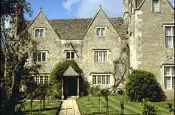
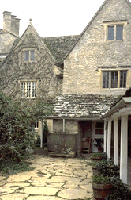
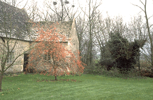
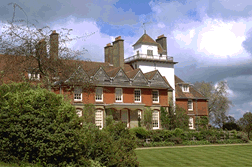
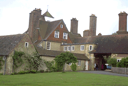

Visits To English Arts & Crafts
Landmarks
With
an increase of interest in the Arts & Crafts Movement, and
Victorian design and architecture in general, landmarks sites have
become more popular. Some of the houses and sites have become easier
to visit, but the drawback is that you may share your tour with bus
groups, and some sites that were once quite obscure have resorted to
timed ticket arrangements. The following observations are from my own
travel experience, and I hope that my readers may profit from my
suggestions.
John Burrows, Vinehill, Poole's Corner
William Morris Sites: Kelmscott Manor And Its
Neighborhood
The
place on earth closest to the heart of the great designer and poet
was Kelmscott Manor in Oxfordshire, described in his own words in
1895 in The Quest. It is furnished with
original possessions of his family and friends, including some of the
great works of art and craft associated with Morris, Rossetti,
Burne-Jones and May Morris.
Kelmscott Village still holds the charm it held in the 19th
century. It is a small place well off the main roads, with a handful
of stone cottages, a small church and a pub. Kelmscott Manor is at
the very end of the lane that winds through the village.
The manor is open to the public on Wednesdays from April through
September, from 11:00 am - 1:00 pm and 2:00 pm - 5:00 pm, with last
admissions at 12:30 pm and 4:30 pm, and on the third Saturday of each
month, April to September, 2:00 pm - 6:00 pm, with last admissions at
5:30 pm. Cost for adults is 6 British pounds, 3 pounds for children
under 16 and for full time students. Tours are self-guided. During
1996 tours are by timed ticket only and numbers are limited to about
50 people per hour in the interests of the conservation of the house
and its contents. The best advice is to arrive early (ticket sales
for the day start at about 9:30 am), and plan to enjoy the day in the
neighborhood of Kelmscott - this is not a place to see on a fly-by
visit!
While
waiting for your tour time, take time to walk through Kelmscott
Village - a level, easy walk of about a mile to the parish church,
which has some early wall painting that was admired by Morris. The
Morris family grave is on the east side of the churchyard. Beyond the
Manor is a path that leads to the water meadows of the Thames.
Lunch is served in one of the barns at Kelmscott Manor, and there
is a nice gift shop and bookstore. Full pub fare is available nearby
at The Plough Inn, which also has a full restaurant in the evening,
seven days a week. The food is very good, and the B&B rooms are
very comfortable. (For reservations, call 01367 253543.)
Other sites worth visiting near Kelmscott:
 Buscot
Park is a simple Georgian country home with pleasant gardens. It is
on the A417 between Lechlade and Faringdon, about five miles from
Kelmscott. The art collection includes a fine collection of
Pre-Raphaelite paintings, but the greatest fame is the group of The
Legend of the Briar Rose (The Sleeping Beauty) paintings by Edward
Burne-Jones. Burne-Jones designed the gilded frames and paneling for
the room, incorporating Morris's captions and ten smaller panels
painted to compliment the four large paintings.
Buscot
Park is a simple Georgian country home with pleasant gardens. It is
on the A417 between Lechlade and Faringdon, about five miles from
Kelmscott. The art collection includes a fine collection of
Pre-Raphaelite paintings, but the greatest fame is the group of The
Legend of the Briar Rose (The Sleeping Beauty) paintings by Edward
Burne-Jones. Burne-Jones designed the gilded frames and paneling for
the room, incorporating Morris's captions and ten smaller panels
painted to compliment the four large paintings.
Buscot Park is opened by the National Trust. House and grounds
admission is 4 British pounds. The house is open on Wednesdays to
Friday from 2 - 6 pm (last admissions at 5:30 pm), and on the second
and fourth weekends of each month from April through September. A tea
room is open the same days as the house from 2 - 5 pm. For more
information call 01367 240786.
In Oxford, northeast of Kelmscott, there are many sites with
Morris associations, including five important windows by Morris and
Burne-Jones at Christ Church Cathedral open Monday - Sat from 9 - 5,
and Sunday from 1 - 5, admission fee). At the gift shop there is an
excellent guide book called "Burne-Jones and William Morris in Oxford
and the Surrounding Area," by Ann Dean.
On the way south from Faringdon to the M4, don't miss the tithe
barn at Great Coxwell. The National Trust maintains this great 13th
century barn that is 152 feet long, 44 feet wide and 48 feet high. It
is open during daylight hours with no admission charge.
This building was considered one of the great monuments of the
Middle Ages by Morris, and photographs of it were widely
published.
Further south is the town of Marlborough, where Morris attended
the college. The High Street includes many tile-hung late 17th
century buildings (inspiration of the Queen Anne Revival), and the
local includes the Savernake Forest and the Avebury Stone Circle,
both haunts of Morris as a teenager.
Northwest of Kelmscott is Cheltenham, where the Cheltenham Art
Gallery and Museum has a permanent installation entitled "Good
Citizens Furniture." It includes pieces by Morris, Voysey, Ashby,
Gimson and the Barnsleys. Admission free. On Clarence Street in
Cheltenham (one block off the High Street). Open Monday - Saturday
10:00 am - 5:20 pm (Closed Bank Holidays). From June 15 - August 28,
1996, Cheltenham is holding an exhibit called "Simply Stunning: The
Pre-Raphaelite Art of Dressing."
OTHER MORRIS SITES OF NOTE:
Wightwick Manor, Wolverhampton, West Midlands
The National Trust administrates this house that was begun in 1887
and which is filled with the work of William Morris, the
Pre-Raphaelites and William de Morgan. This house is well deserving
of its fame as a highpoint of Victorian decorative arts. It is open
to the public from March through December on Thursday and Saturday
from 2:30 - 5:30 pm. (The ground floor only is open on Bank Holiday
weekends from 2:30 - 5:30 pm.) Cost: 4.80 British pounds, students
2.40 British pounds. There is a shop and tea room. The house is 3
miles west of the center of Wolverhampton (on the Bridgnorth
Road).
The nearby town of Bridgnorth offers good accomodations and dining
in both the lower and upper towns. The upper town presents a
particularly rewarding "off the beaten path" experience. It is a
small market town, unspoiled by tourism, that has a dramatic setting
on a high ridge. The castle ruins, city gate, old market hall, and
Georgian houses make this a special town center to explore by
foot.
Standen,
East Grinstead, Sussex
Another National Trust property, this 1890's house was designed by
Philip Webb, an architect who remained a friend of Morris throughout
their lives. Standen is extensively decorated with the designs of
Morris, and includes Pre-Raphaelite art, de Morgan pottery and Benson
light fixtures. It is open from April through October Wednesday to
Sunday and Bank Holiday Mondays from 1:30 - 5:00 pm. House &
garden cost 4.50 British Pounds. A tearoom serves light lunches and
afternoon teas, and there is a gift shop. Standen is located two
miles south of East Grinstead, not far from Gatwick Airport.
William Morris Gallery, Lloyd Park, Forest Road, Walthamstow,
London E17.
The boyhood home of Morris has been a museum dedicated to his life
and work since 1950. It has an excellent permanent gallery
representing all aspects of Morris's career. Changing galleries
exhibit other Arts & Crafts Movement and Morris items.
Open Tuesday - Saturday and the first Sunday of each month from
10:00 am - 1:00 pm and 2:00 pm - 5:00 pm. Admission free. For further
information call 0181-527 3782.
Walthamstow is the northernmost station on the Victoria
underground line. Travel time (off peak hours) is around 30 - 45
minutes from central London. The house is about a ten minute walk
from the station, and can be reached by bus or cab. The strength of
the collection makes this out of the way museum well worth the effort
to get there.
Linley Sambourne House, 18 Stafford Terrace, Kensington, London
W8.
Home to a famous Punch cartoonist, this residence has many Morris
wallpapers, and is noteworthy as a rare Victorian townhouse that has
been preserved in its entirety. The house maintains the authentic
feeling of a family's occupancy. It is open from March through
October on Wednesdays from 10:00 am - 4:00 pm and on Sundays from
2:00 - 5:00 pm. Telephone 0181-994 1019 for more information. This
house in operated by the Victorian Society, and there is an admission
charge. It is a London landmark that should be on the itinerary of
everyone interested in Victorian decorative arts. Stafford Terrace is
a short street parallel to Kensington High Street (between Phillimore
Gardens and Argyll Road), a short walk northwest of the Kensington
High Street underground station. For sale in the book shop is a
useful pamphlet entitled "Victorian Places to Visit," by Meg
Wright.
Leighton House, 12 Holland Park Road, Kensington, London
W14.
The home of artist Frederic, Lord Leighton, this house has no
association with William Morris, but it provides a wonderful glimpse
into the artistic world of London in the late 19th century. Of
particular note is the Arab hall, decorated with antique Arab tile
and tiles by William de Morgan and a frieze by Walter Crane. The
public rooms are furnished in a Victorian style, and Leighton's
studio houses examples of his famous paintings. Open from Monday to
Saturday, 11:00 am - 5:30 pm. Admission free. Telephone 0171-602 3316
for more information. 1/2 mile west of Kensington High Street
underground station.

More Views of Standen, East Grinstead, Sussex, designed by Philip
Webb. First view shows the arch into the entrance courtyard. Second
view shows the adjoining 15th century farmhouse that suggested the
vernacular architectural style and materials of the main house. The
third and fourth views are of the gardens at Standen.
This page is sponsored by J.R. Burrows &
Company, Historical-Design Merchants. Please visit our home page
to see our reproduction Arts & Crafts Movement wallpapers,
fabrics, lace curtains and carpets.
 J.R.
Burrows & Company
J.R.
Burrows & Company
P.O. Box 522
Rockland, Massachusetts 02370
E-mail:
merchant@burrows.com
Phone: (800) 347-1795; Phone: (781) 982-1812 Fax: (781) 982-1636
 Return
to Founders of the Arts & Crafts Movement Page
Return
to Founders of the Arts & Crafts Movement Page